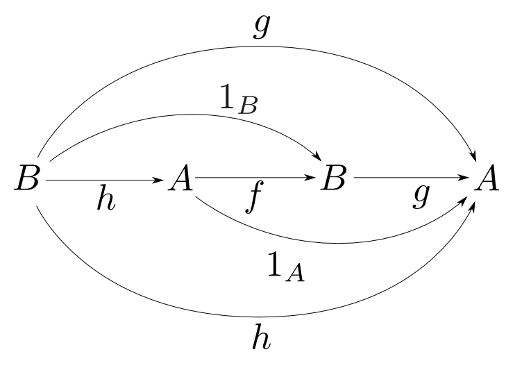

圏論勉強会
第1回
@ワークスアプリケーションズ
中村晃一2013年5月16日
謝辞
この勉強会の企画，会場設備の提供をして頂きました
㈱ ワークスアプリケーションズ
様にこの場をお借りして御礼申し上げます。
自己紹介
- 中村晃一
- 東京大学大学院情報理工学系研究科コンピュータ科学専攻
後期博士課程2年 - プログラム最適化・言語処理系の実装技術・人間と言語の関係等に興味があります。
- twitter: @9_ties
はじめに
この会について
- 圏論(category theory)を題材にいろんなことを学びます。
- 計算機科学関係の話題が多めになると思います。
- 毎週1回，全12週くらいの予定です。
- 何らかの関数型言語に触れていた方が今後の授業をより楽しめると思います。
- 質問・コメント大歓迎です。他の聴衆の為にもなるので後回しにせずその場でどうぞ。
- この資料はhttp://github.com/nineties/category-seminarに置いてあります。
参考書
- Steve Awodey著 Category Theory をお薦めします。
- 非数学専攻者向けに書かれています。 http://www.andrew.cmu.edu/course/80-413-713/notes/

第１回:圏論って何?
第1回の内容
初回はあまりテクニカルな話をせず、圏論の全体像をつかむ為の話をします。
- 圏論って何？
- 圏論って何の役に立つの?
- 圏論ってどう勉強するの?
- 圏論って学ぶ価値があるの?
具体例から始めよう
問: データ型$A$,$B$が与えられているとします。
$A$と$B$の対(pair)を表すデータ型Pをどう定義すれば良いでしょうか？
/* C言語での例 */
struct P {
A first;
B second;
};
他にもいろいろ考えて下さい。
「対」って何?
「$A$,$B$の対」とみなせる、多くの具体的な定義があります。一方
type P = (A, B, Int)
みたいなのは「$A$,$B$の対」とはみなせそうにありません。
「対」とそれ以外はどのように区別されるのでしょうか？
抽象的に考えよう
$P$の具体的な内部構造に依存しない「対」の定義を考えます。
$P$が$A$,$B$の対であるならば，$P$型のデータ(以下同様)から$A$,$B$を読み出す方法があるはずです。
言い換えると$P$から$A$,$B$への特定の関数が存在します($first$と$second$と呼ぶ事にします。)。
この様な状況を以下のように図式(diagram)で表現してみます。


ある型からA,B型への関数は無数に存在し得ます。
データを取り出す他にも様々な計算が行えるからです。

そこで任意の型$X$と任意の関数$f: X\rightarrow A$，$g: X\rightarrow B$に対して，以下のような図式を考えます。

$X$から$A$,$B$の値を作れるなら，それらの値の対を$X$から作る関数$u$が必ず存在するはずです。

このとき，$u$で対を作って$first$で取り出す事は，$f$と等しく
$second$で取り出す事は，$g$と等しくなければいけません。
このことは関数合成の記号$\circ$を用いると
と表す事が出来ます。
もしくは「以下の図式が可換(commutative)である」と表現します。
$u$の唯一性
$P$が$A$,$B$以外の余分なデータを持っている(対より大きい)なら，余分なデータをどう生成するかの選択肢があり $u$は唯一に定まりません。
「対」の定義
型$P$が型$A$,$B$の対であるという事は，関数$first: P\rightarrow A$，$second: P\rightarrow B$が存在し 任意の型$X$と任意の関数$f: X\rightarrow A$, $g: X\rightarrow B$に対して，以下の図式が可換となるような $u: X\rightarrow P$が唯一つ存在する事である。
「対」の定義
型$P$が型$A$,$B$の対であるという事は，関数$first: P\rightarrow A$，$second: P\rightarrow B$が存在し 任意の型$X$と任意の関数$f: X\rightarrow A$, $g: X\rightarrow B$に対して，以下の図式が可換となるような $u: X\rightarrow P$が唯一つ存在する事である。
「対」の定義
型$P$が型$A$,$B$の対であるという事は，関数$first: P\rightarrow A$，$second: P\rightarrow B$が存在し 任意の型$X$と任意の関数$f: X\rightarrow A$, $g: X\rightarrow B$に対して，以下の図式が可換となるような $u: X\rightarrow P$が唯一つ存在する事である。
「対」の定義
型$P$が型$A$,$B$の対であるという事は，関数$first: P\rightarrow A$，$second: P\rightarrow B$が存在し 任意の型$X$と任意の関数$f: X\rightarrow A$, $g: X\rightarrow B$に対して，以下の図式が可換となるような $u: X\rightarrow P$が唯一つ存在する事である。
普遍性
型$P$が型$A$,$B$の対であるという事は，関数$first: P\rightarrow A$，$second: P\rightarrow B$が存在し 任意の型$X$と任意の関数$f: X\rightarrow A$, $g: X\rightarrow B$に対して，以下の図式が可換となるような $u: X\rightarrow P$が唯一つ存在する事である。
抽象化の力
今の例において
- $P$,$A$,$B$,$X$が型であるという事
- $first$, $second$, $u$, $f$, $g$が関数であるという事
- $\circ$が関数合成であるという事
は本質的ではありません。
何らかの「もの」と「矢」と「矢の連結」を用いて考える事が重要です。
「対」のアナロジー
アナロジー的に
- 「もの」をある集合$X$の部分集合
- 「矢」を集合の包含関係
- 「矢の連結」を包含関係の合成
とすると「対」の概念は何に対応するのかを考えてみます。
具体例として$X=\{1,2,3\}$として$\{1,2\}$と$\{1,3\}$の「対」を考えます。
別の矢をつなげて作れる矢は省略してます。
$\{1,2\}$と$\{1,3\}$に向かう矢を持つものは$\cdots$
$\{1,2\}$と$\{1,3\}$に向かう矢を持つものは$\cdots$$\{1\}$と
$\{1,2\}$と$\{1,3\}$に向かう矢を持つものは$\cdots$$\{1\}$と$\emptyset$
$\emptyset$,$\{1\}$のそれぞれから$\{1\}$に向う矢が唯一存在して以下の図式は可換。

つまり$\{1, 2\}$と$\{1, 3\}$の「対」に相当するものは$\{1\}$です。
実は「型と関数」の場合の「$A$,$B$の対」は、「ある集合$X$の部分集合と包含関係」の場合には「$A$,$B$の共通部分」となります。
「対」のアナロジー(その2)
今度は
- 「もの」を整数
- 「矢」を「$\leqq$」
- 「矢の連結」を「$\leqq$」の連結
に置き換えてみます。
具体例として$4$と$6$の「対」を考えます。
ここでも別の矢をつなげて作れる矢は省略してます。
$4$,$6$の両方への矢を備えるのは$\cdots,1,2,3,4$。
このうち「対」と同じ普遍性の条件を満たすのは$4$です。
つまり$4$と$6$の「対」に相当するものは$4$です。
実は「型と関数」の場合の「$A$,$B$の対」は、「整数と順序」の場合には「$\min\{A,B\}$」となります。
素朴な定義では共通性が見えない
$A$,$B$の共通部分とは$A$,$B$の両方に含まれる要素全てからなる集合である。
$\min\{A,B\}$とは$A$,$B$のうち小さい方である。
言葉を変えると共通性が見えてくる
集合$A$,$B$の共通部分$P$とは$P\subseteq A$,$P\subseteq B$であって、$X\subseteq A$,$X\subseteq B$であるような任意の$X$に対して$X \subseteq P$となる集合の事である。
整数$A$,$B$の最小値$M$とは$M\leqq A$,$M\leqq B$であって、$X\leqq A$,$X\leqq B$であるような任意の$X$に対して$X \leqq M$である整数の事である。
一見すると無関係な3つの概念が、同じ言葉で説明出来る事を見ました。
| 型と関数 | ・・・ | 対 |
| 集合と包含関係 | ・・・ | 共通部分 |
| 整数と順序 | ・・・ | 小さい方 |
まだ一切圏論的な定式化を行なっていませんが、これらを圏論では 直積(product)と呼びます。
抽象化の力
概念を「内的な性質」ではなく「外的な関係性」によって特徴付ける事によって
- 様々な概念の背後にある、本質的な構造が見えてくる。
- 概念から概念への、強力なアナロジーが可能になる。
という事が解ります。
圏の定義
圏(category)とは
- 対象(object):$A,B,C,\cdots$
- 射(arrow,morphism):$f,g,h,\cdots$
- 射の合成(composition): $\circ$
からなり、以後の条件を全て満たすものである。
任意の射$f$には
- 始域(domain): $\mathrm{dom}(f)$
- 終域(codomain): $\mathrm{cod}(f)$
という２つの対象が備わる。
$\mathrm{dom}(f) = A$,$\mathrm{cod}(f) = B$である事を $ f: A\rightarrow B$ と表す。
射$f:A\rightarrow B$,$g:B\rightarrow C$が存在するならば、
- 合成射(composite) $ g\circ f: A \rightarrow C $
も存在する。
任意の射$f: A \rightarrow B$, $g: B \rightarrow C$, $h: C \rightarrow D$に対して
結合律(associative law)
が成り立つ。すなわち、下図が可換である。

任意の対象$A$に対して
- 恒等射(identity) $ 1_A: A \rightarrow A $
が存在し、任意の$f: A \rightarrow B$に対して単位元律(identity law)
が成り立つ。すなわち、右下図が可換である。
端的に言うと、圏とは
- 対象の集まりと
- 対象から対象への者の集まりからなり
- 同じ対象に出入りする射と射は必ず合成でき
- 合成の順番は関係なく
- 恒等射がある
ものです。
次回、様々な圏の例を見てみます。
先ほどの例における恒等射
- 集合と関数の圏: 恒等関数 $1_A(x) = x$
- 集合と包含関係の圏: $A \subseteq A$
- 整数と順序の圏: $A \leqq A$
恒等射の一意性
対象$A$についての恒等射を$1_A$と表せるのは、 任意の$A$について恒等射が一意に定まるからです。
 【一意性の証明】
【一意性の証明】
$1_A,1'_A: A\rightarrow A$が共に恒等射だとする。
恒等射の性質より右図の上半分、下半分はどちらも可換だから
$$ 1_A = 1'_A $$
となる。つまり恒等射は一意に定まる。□
このような証明スタイルをdiagram chasingといいます。
同型
「等しさ」とは
あるものとあるものの「等しさ」というのは曖昧な概念です。
例えば集合$\{0, 1, 2\}$と$\{1, 3, 5\}$は異なりますが
「要素の数」という観点ではある意味等しいです。
圏論には「～と～がある意味等しい」という事について正確に述べる為の、様々な言葉が登場します。
同型射
$f: A\rightarrow B$に対して、$g: B\rightarrow A$が存在し、
が成り立つならば$f$を同型射(isomorphism)と呼ぶ。
また、圏$\mathbf{C}$において$A$と$B$の間に同型射が存在するならば、$\mathbf{C}$において$A$は$B$と同型(isomorphic)であると言う。

例
- 対象: 集合
- 射: 恒等関数のみ
からなる圏では$\{0,1,2\}$と$\{1,3,5\}$は同型ではありません。

注: 同じ色の矢印を全部合わせて一つの関数(つまり射)です。
例
- 対象: 集合
- 射: 任意の関数
からなる圏では$\{0,1,2\}$と$\{1,3,5\}$は同型です。
注: この図にあるのは恒等射のうちの一つ(全部で6つ)です。恒等射が一つでも存在すれば同型です。
逆射
$f: A\rightarrow B$に対して
となる$g$は一意に定まる。このような$g$を逆射(inverse)と言い$f^{-1}$と表す。

【一意性の証明】
$g, h: B\rightarrow A$が$f$の逆射であるとすると右図が可換となるから、
$$ g = h $$
となる。つまり逆射は一意に定まる。
□